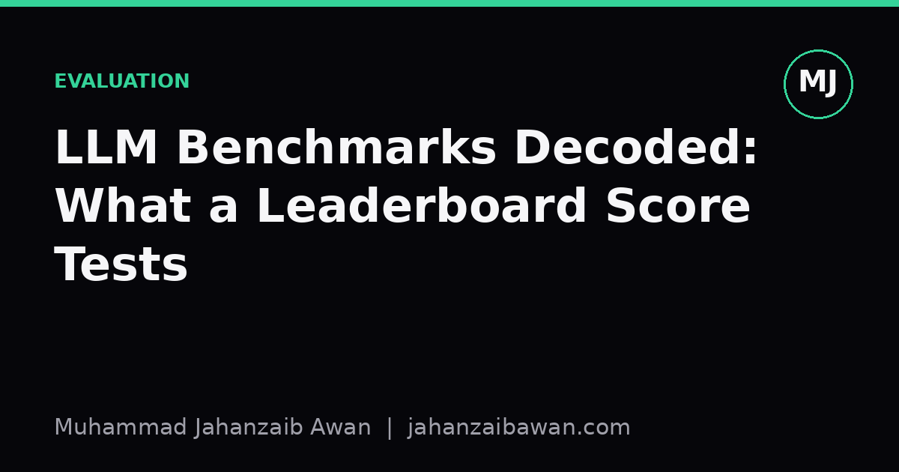

LLM Benchmarks Decoded: What a Leaderboard Score Tests
A high score on a popular benchmark tells you something specific and narrow, not that a model is generally smarter. Here is how to read the number correctly.

Why the number seduces us
A leaderboard is irresistible because it collapses something messy into one clean digit. Model A scores 78.4, model B scores 74.1, and it feels like we have just measured intelligence the way we measure height. I think that framing is the whole problem. A benchmark score is the result of a specific test set, a specific prompt format, a specific scoring function, and a specific decision about what counts as a correct answer. Change any one of those and the number moves, sometimes by more than the gap between the models you were comparing.
Consider a multiple-choice knowledge benchmark with four options per question. A model that answers completely at random should score around 25 percent. If a smaller model scores 30 percent and a larger model scores 34 percent, the four-point gap looks meaningful in a table, but a large share of both scores is just the random floor plus whatever surface pattern-matching the model picked up from option phrasing. The interesting signal is the distance above that floor, not the raw percentage, and very few leaderboards report it that way.
None of this means benchmarks are useless. It means a score is a measurement under specific conditions, and the value of any measurement depends on whether you understand those conditions well enough to know what it generalises to. That is the habit I want to build in this post: read a benchmark the way you would read a lab result, by asking what was actually tested before you ask what the number was.
The three quiet failure modes
The first failure mode is contamination. Many benchmarks are built from text that circulates publicly, and large models are trained on enormous scrapes of the internet. If a benchmark question, or something close enough to it, appeared in training data, the model is not reasoning, it is recalling. Suppose a maths benchmark has 500 problems, and 40 of them have near-duplicates floating around on forums or solution repositories that were plausibly swept into training corpora. If a model gets 90 percent of those 40 right but only 55 percent of the remaining 460, the blended score of roughly 58 percent overstates genuine problem-solving ability by several points, and you would never see that gap without a contamination audit that most leaderboards do not publish.
The second failure mode is prompt sensitivity. The same model evaluated on the same questions can swing by ten percentage points or more depending on whether the instructions are phrased as a question, a completion, or a chat turn, and depending on how few-shot examples are formatted. I have seen this described as a nuisance detail, but I think it is closer to the whole story: if reordering the answer choices from A, B, C, D to a different arrangement changes a model's accuracy by five points, then five points of the leaderboard gap between two models might just be a difference in how sensitive each one is to formatting, not a difference in capability.
The third failure mode is narrow task coverage disguised as generality. A benchmark named after a broad concept like reasoning or comprehension is still, underneath, a fixed collection of a few thousand items written by a particular group of people with a particular style. A model tuned or lucky on that style can outperform a genuinely stronger model that simply expresses answers differently. This is why a model can top one leaderboard and slip several places on another that is nominally testing the same skill: they are not testing the same skill, they are testing the same skill filtered through different question writers.
A worked comparison
Imagine two models evaluated on a 1,000-question benchmark. Model X scores 720 correct, model Y scores 705. The leaderboard ranks X above Y by 1.5 points and that is the entire story most readers absorb. Now suppose we do the extra work: we identify that 60 of the 1,000 questions are near-duplicates of publicly available content, and we check each model's accuracy on that subset versus the rest. Model X gets 55 of those 60 right, 92 percent, but only 665 of the remaining 940, about 70.7 percent. Model Y gets 40 of the 60 right, 66.7 percent, but 665 of the remaining 940 as well, also 70.7 percent.
On the contaminated subset the models look wildly different, 92 percent versus 66.7 percent, but on the clean subset they are statistically indistinguishable. The 1.5-point leaderboard gap turns out to be almost entirely explained by differential exposure to leaked content, not by superior reasoning. This is a constructed example with round numbers to make the arithmetic obvious, but the shape of the effect, a small aggregate gap driven by a small contaminated subset, is exactly the kind of thing that real contamination audits have flagged in practice across various benchmarks.
The practical lesson is that a single aggregate score is a compressed summary of a much richer distribution of per-item outcomes, and compression always loses information. Two models can have identical aggregate scores while failing on completely different subsets of questions, which matters enormously if your downstream use case overlaps with one of those subsets and not the other. A model that is excellent at competition-style algebra but weak at word problems involving units and conversions will look fine on a blended maths score while being unsuitable for a product that is entirely about unit conversions.
What to actually do with a leaderboard
Treat a headline score as a starting filter, not a conclusion. If you are choosing a model for a real task, the leaderboard tells you which handful of candidates are worth spending your own evaluation budget on; it should not tell you the final answer. Build a small, held-out test set that resembles your actual use case, keep it private so it cannot leak into anyone's training run, and re-run it whenever you are seriously comparing models.
Ask what floor the benchmark has, what format sensitivity has been reported for it, and whether anyone has published a contamination check. If a benchmark provider does not discuss these things, treat the score with proportionally more caution rather than less. A leaderboard that shows only one number per model is telling you it has not done, or has not shared, the harder analysis.
Finally, remember that variance across seeds, prompt templates, and even minor software version differences can rival the gap between adjacent leaderboard entries. A ranking with a one-point spread between five models is not five distinct tiers of ability, it is likely one tier with noise. Read the score, respect it as one data point among several you need, and never let a single column in a table make a decision that your own evaluation on your own data should be making instead.